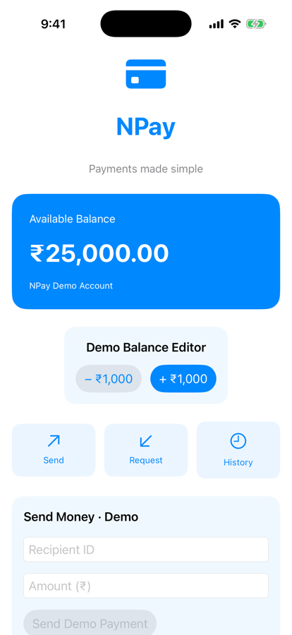
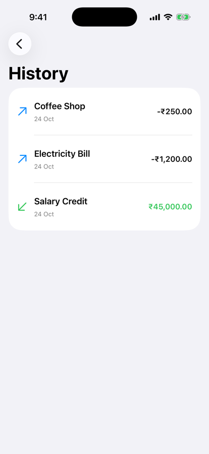

Part 1 · The problem we’re solving (section 1)
From one long scroll to three screens
Before · Unit 2
- Balance, editor, form, history
- One ScrollView; scroll to reach anything
After · Unit 3
- The dashboard is the start
- Send Money and History: own screens
- Back returns

Before: 2.12

Dashboard
Send Money

History
Part 4 · Integrate with the NPay dashboard (section 8)
Wrap the dashboard, add two links
ContentView.swift (body)
NavigationStack {
ScrollView {
VStack(spacing: 24) {
// Existing dashboard content
NavigationLink {
PaymentScreen()
} label: {
Label("Open Send Money",
systemImage: "arrow.up.right")
}
NavigationLink {
HistoryScreen()
} label: {
Label("Open History",
systemImage: "clock")
}
}
.padding()
}
.navigationTitle("NPay")
}Steps
- NavigationStack outside the ScrollView
- Title on the root content
- Links inside the dashboard’s VStack
Run and check
- Tap each link
- Back returns to the dashboard
Dashboard (final code)
Part 5 · State ownership across screens (section 9)
The dashboard stays the owner
Owner and destinations
// ContentView: the owner
@State private var balancePaise = 2_500_000
@State private var transactions: [Transaction] = []
// the destinations receive, they don't own
PaymentScreen(
availableBalancePaise: balancePaise,
onSend: sendDemoPayment
)
HistoryScreen(transactions: transactions)Measured
- After paying, the still-open screen read Available: ₹23,500.00
- It shows the owner’s current value

Right after paying
Part 8 · PaymentScreen, complete (code 8)
Pay, confirm, and go back
Screens/PaymentScreen.swift (condensed)
struct PaymentScreen: View {
let availableBalancePaise: Int
let onSend: (String, Int) -> Bool
@State private var recipient = ""
@State private var amountText = ""
@State private var showSuccess = false
@FocusState private var focusedField: Field?
@Environment(\.dismiss) private var dismiss
enum Field: Hashable { case recipient, amount }
var body: some View {
// fields, validation, Send Demo Payment (as in 2.12);
// when onSend returns true: focusedField = nil; showSuccess = true
Text("…")
.alert("Demo Payment Successful", isPresented: $showSuccess) {
Button("Done") { dismiss() }
} message: {
Text("Your simulated payment was recorded.")
}
}
}Pushed
Sent ₹1,500

Done: ₹23,500
@Environment(\.dismiss): a destination asks to be dismissed